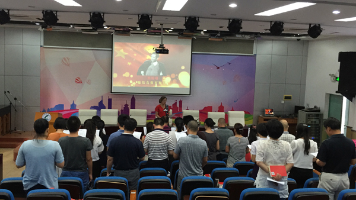
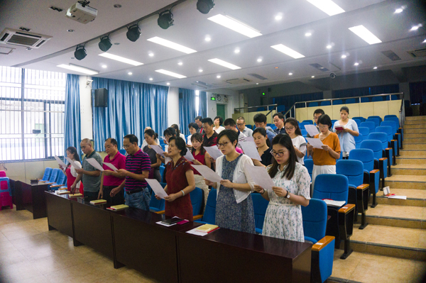
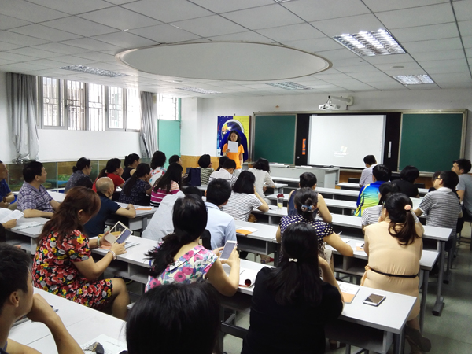
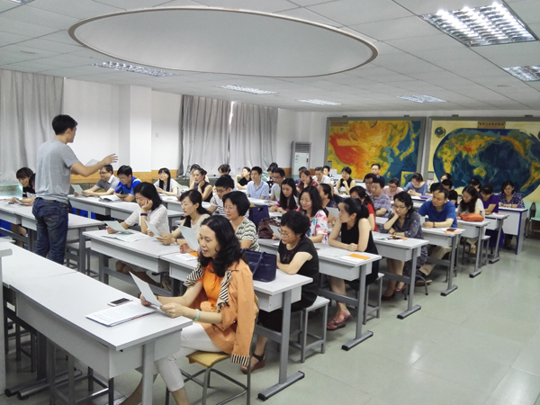
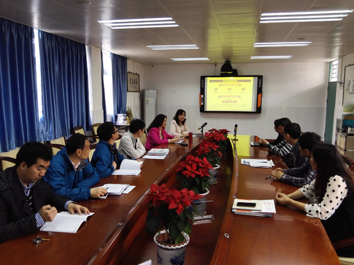
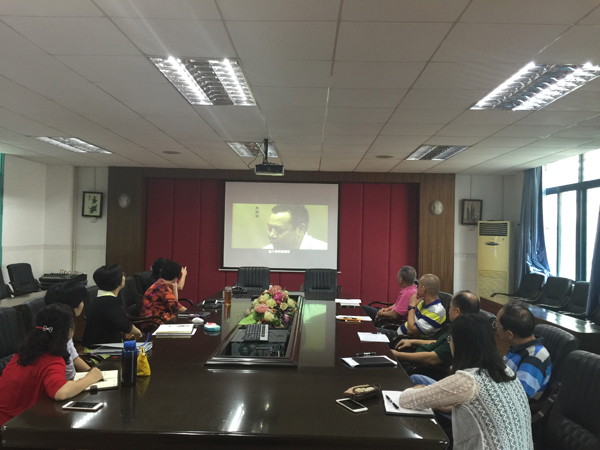

读廉洁书 听廉洁课 唱廉洁歌
——我校党总支开展“两学一做”廉洁教育系列活动
为深入贯彻上级文件精神，深化“两学一做”教育活动，充分发挥廉政歌曲教育人、感化人、陶冶人、鼓舞人的独特作用。近日，我校党总支下属各支部组织开展“学唱廉洁教育歌”活动，全体党员以昂扬的精神风貌唱响了廉政主旋律。通过学唱廉洁教育歌曲活动，在全体党员中大力唱响反腐倡廉主旋律，积极推进了廉政文化进学校活动，提高了广大教职工廉洁从教、爱岗敬业的信念。同时也充分展示出我校教师们厉行担当、创新争先的精神和决心。
此外，我校党总支书记何俊校长今年以来，结合学校工作和思想实际，围绕党风廉政建设以及习近平总书记关于立德树人、创新驱动、“四有”好老师、青年成长等重要论述多次讲授廉洁教育专题党课，要求全体党员把学习教育和师德师风建设相结合，有针对性地读廉洁教育书籍，通过读书写心得，引导全体党员廉洁从教，坚定理想信念做好本职工作。






